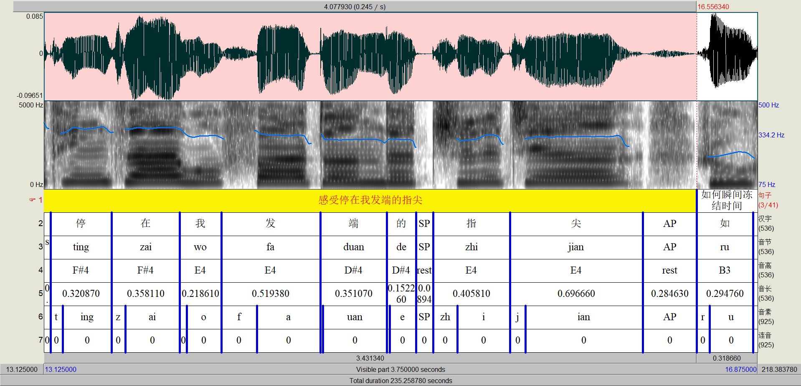

音库制作和文本前端
音库制作
音库制作概述
音库的制作一般包括发音人选型、录音文本收集、音频录制、语料整理和标注5个步骤。音库的制作对整个语音合成系统的建设较为重要，音库如果建设较差，比如发音人风格难以接受、标注和实际音频不符，之后的努力只会事倍功半。
发音人选型
发音人选型，顾名思义，就是根据应用场景选择录音风格、发音人等。首先，语音合成系统在不同场景下，对训练语料的要求有所不同。比如新闻播报场景下，要求发音人播报风；有声书合成场景下，要求发音人抑扬顿挫，富有感情；在车载等领域，则要求交互风；在情感语音合成则要求录制不同情感的语音；甚至在一些特定场景下，比如二次元领域，则要求可爱风等等。其次，不同的发音人对最终的合成语音自然度也有影响，部分发音人发音苍老、低沉，即使同样的文本、声学模型和声码器，最优的超参数，母语者也倾向于给予较低的自然度打分。因此，在音库录音之初，就可以发布有关于录音样品的平均意见得分评测，让母语者或者需求方选择合适的发音人和录音风格。虽然目前后端模型有一些迁移风格、说话人的能力，但最好从源头就做好。
录音文本收集
在一个语种的语音合成建设之初，就可以同步收集该语种对应的大文本。大文本不仅仅可以筛选录音文本，还可以从中提取词条、统计词频、制作词典、标注韵律、构建测试集等等。录音文本的选择一般遵循以下几个原则：
-
音素覆盖。这就要求在录音开始之前，就需要构建起来一套基础的文本前端，最起码要有简单的文本转音素（G2P）系统。大部分语种的字符或者字符组合会有较为固定的发音，比如英语中的h总是会发[h]的音，o总是会发[eu]的音，如果找不到公开、即时可用的文本转音素系统，可以根据规则构建。用于录音的文本要保持多样性，音素或者音素组合要尽可能覆盖全，可以统计音素序列中的N-Gram，确保某些音素或者音素组合出现频次过高，而某些音素或音素组合又鲜少出现。
-
场景定制。如果是通用语音合成，需要确保百科、新闻、对话、高频词、基数词和序数词等数字串、包含常用外来词（如包含英语单词）的句子要有所覆盖；如果是特定场景，比如车载领域，则可以收集车载播报的常用话术、专业术语（比如油量、胎压等）、音乐名或歌手名、地名和新闻播报，在特定场景下，需要对业务有一定的理解，并且在一开始就要和需求方紧密沟通。
-
文本正确性。录音文本确保拼写无误，内容正确，比如需要删除脏话、不符合宗教信仰或政治不正确的语句等。
音频录制
音频的录制对合成语音的表现较为重要，较差的语音甚至会导致端到端声学模型无法正常收敛。用于训练的录音至少要保证录音环境和设备始终保持一致，无混响、背景噪音；原始录音不可截幅；如果希望合成出来的语音干净，则要删除含口水音、呼吸音、杂音、模糊等，但对于目前的端到端合成模型，有时会学习到在合适的位置合成呼吸音、口水音，反而会增加语音自然度。录音尽可能不要事先处理，语速的调节尚可，但调节音效等有时会造成奇怪的问题，甚至导致声学模型无法收敛。音频的录制可以参考录音公司的标准，购买专业麦克风，并保持录音环境安静即可。在音库录制过程中，可尽早提前尝试声学模型，比如音库录制2个小时语音后，就可尝试训练基线语音合成系统，以防止录音不符合最终的需求。
语料整理
检查文本和录制的语音是否一一对应，录制的音频本身一句话是否能量渐弱，参与训练的语音前后静音段要保持一致，能量要进行规范化。可使用预训练的语音活动检测（Voice Activity Detection，VAD）工具，或者直接根据语音起止的电平值确定前后静音段。可以使用一些开源的工具，比如pyloudnorm统一所有语音的整体能量，这将有助于声学模型的收敛。当然，在声学模型模型训练时，首先就要对所有语料计算均值方差，进行统一的规范化，但是这里最好实现统一能量水平，防止一句话前后能量不一致。能量规整的示例代码如下。
标注
标注是所有模型都会遇到的问题，但语音合成中所有语料，特别是音素、音素时长让人类一一标注是不现实的，一般是利用文本前端产生一个基线的音素序列和音素时长，然后让人类参与检查。语音合成中的标注要检查以下几点：
-
音素层级。检查语音和音素的一致性；检查重音或音调标注；调整音素边界。
-
单词层级。检查单词的弱化读音情形，比如car[r]某些发音人完全弱读[r]，根据录音删除该音素[r]，或者给予一个新的音素；外来词和缩略词的发音情况，不同音库可能有不同的处理方法；调整单词边界。
-
句子层级。增删停顿，确保和实际录音一致。
标注人员可以采用Praat进行可视化标注和检查，如下图所示为利用Praat标注语料的示例。

总而言之，录音完成后，音素序列跟着录音走，语音如何发音，音素序列就严格按照语音标注，实在不行就发回重录。在语音合成中，同样的音频，不同场景的标注有可能是有细微变化的。比如在新闻播报场景下，发音风格比较平淡，某些细微的停顿和韵律变化可以不用在意，标注上也可以不体现；但是在交互或者小说领域，发音风格的变化较为丰富，对韵律和情感控制要求较高，因此标注可能更为精细，甚至会增加额外的标注信息，停顿、韵律等信息的标注可能和播报风有所不同。
常见的语音合成专业数据提供商有海天瑞声、标贝科技、希尔贝壳等。
文本前端
文本前端在语音合成中扮演的角色
语音合成，顾名思义，是一项将文本转化为语音的技术。以Google的Tacotron系列为代表的端到端语音合成技术大大降低了语音合成的技术门槛。对于表音语言比如英法西德意等语种，甚至可以直接输入文本，让模型自行学习如何将文本转化到语音。但是在实际的生产环境中，直接文本到语音会带来较大的不可控风险，比如"love"/lʌv/读成了/lɪv/，如何快速纠正类似的发音错误；"2kg"如何指定模型读成"两千克"，而非"二kg"等。因此在实际的语音合成系统中，通常会为语音合成系统添加文本前端，主要作用是将文本转换为音素，甚至会添加一些韵律标识构成语言学特征（linguistic feature），以便声学模型更好地建立文本到语音的映射。
文本前端的主要组成
文本前端一般遵循文本，到规范化文本，到音素这3个基本步骤，同时会从文本和规范化文本中预测韵律。音素和韵律标识统称为语言学特征（linguistic feature）。文本前端的输出作为下游声学模型和声码器的输入，如果发生发音错误等问题，大部分情况下直接修正音素序列即可，大大降低了问题解决的难度。一般来说，文本前端可分为以下五个部分：
-
文本预处理：主要是解决文本中书写错误、一些语种中同形异码等问题。
-
文本归一化：主要解决文本中的特殊符号读法，比如"2kg"转换为"两千克"，另外还要处理一些语种比如波兰语、俄语中的性数格变化。
-
分词：一些语种比如中文、藏语、日语、泰语、越南语、维吾尔语、朝鲜语等并非以空格作为词边界，通常需要分词以便后续的处理，但世界上大部分语种都以空格为词边界，该步骤可省略。
-
文本转音素（G2P）：将文本转换为注音，比如"中国"转化为"zhong1 guo2"。
-
韵律分析：语音中每个音素的发音时长不同，停顿也不同。将文本转换为音素之后，通常会加入一定的韵律信息，以帮助声学模型提升合成语音的自然度，加入的韵律信息可以分为音素（L0）、单词（L1）、breath break（L3）和句子（L4）四个韵律层级。
Unicode调研和文本预处理
开展一个新语种的文本前端的开发，首要是调研该语种文字的字形、读音等，了解世界各语种的好去处无疑是Unicode官网和维基百科。Unicode将世界上所有的字符均分配唯一数字标识，同时为了兼容和节省空间，常常采用"统一码转换格式-8"（UTF-8）、"统一码转换格式-16"（UTF-16）等具体实现该编码。具体来说，可以进入Unicode Code Charts查询各个语种的编码。以最广泛使用的拉丁字符为例，Basic Latin (ASCII)文档中，首先是一页版权声明，之后展示了该类字符的Unicode码，最后是各个字符的简短介绍，帮助快速了解该语种。在介绍时，对于每一个字符，比如"!"，首先给出它的Unicode编码"0021"（\(\backslash\)u0021），然后是该字符的字形如"!"，接下来一般是该字符的简介比如"EXCLAMATION MARK"，之后会给出一些补充信息，比如"="表示该字符的其它含义， \(\to\) 表示该字符的相关字符， \(\equiv\) 表示该字符的同形异码。同形异码在多语种的文本前端中尤其需要注意，例如Latin Extended-A中，\(\backslash\)u0100的同形异码为\(\backslash\)u0041\(\backslash\)u0304，这种同形异码的字符需要统一处理为一种字符，用户的输入看起来相同，但在计算机中的表示是完全不同的。
文本前端中的文本预处理模块主要是处理非法输入、同形异码的替换等。文本前端收到输入之后，可以限制一些边界条件，比如防止用户将音视频输入文本前端，限制输入的字符串长度和种类等；之后就进入包括同形异码替换的文本清理模块。首先是确定输入文本的语种（可要求用户提供或者限制本语音合成系统的主要输入语种）；之后是通用处理规则，比如删除"\(\backslash\)u200B"、"\(\backslash\)u200C"等不可见字符，统一标点符号，全角转半角，一些特殊数字如\(\backslash\)u00BD替换为"½"等等；然后是本语系的处理规则，此时主要对同形异码进行替换；然后是本语种的处理规则，主要是处理本语种的外来字符，比如在意大利语中，将奇形怪状的外来字符"Á"、"Ã"、"Ä"、"Å"统一替换为"A"，连接词"Æ"替换为"AE"；最后是针对不同语种定制的后处理规则。逐级处理的好处是代码、层次清晰，当然为了方便，可以统一进行处理和替换。
相关的参考资料：
文本规范化
归一化目前是文本前端中的难点，学术界和工业界最普遍和精确的方法还是靠人肉堆规则，当然也逐渐出现了规则和模型混合的归一化系统，比如A Hybrid Text Normalization System Using Multi-Head Self-Attention For Mandarin、Cold-Start and Interpretability: Turning Regular Expressions into Trainable Recurrent Neural Networks。
一个基础的归一化模块至少应覆盖以下几类规则：物理量、货币、缩略语、常用机构名或专有名词、数字（分数/百分数/科学计数法/小数点/基数词/序数词/数字串）、算术表达式、标点符号、日期（月份/星期）的各种表示、时间、比分、网络用语或外来词等。
相关的参考资料：
分词
对于世界上大部分的语种来说，空格是天然的单词边界，因此分词并非一个常见任务，仅有中日韩、泰语、越南语等语种需要分词。"最大最长匹配"是简单且常见的分词算法，该算法需要准备一个词典，在对文本进行切分时，根据切分方向的不同，还可分为前向、后向、前后向最长匹配算法。以"前向最长匹配算法"为例，该方法首先设定一个词的最大长度，将待切分文本开始到词最大长度内的字符作为"候选词"，每次扫描时，将该"候选词"和词典中的词进行匹配，如果没有找到，就缩短"候选词"的长度继续寻找，直到匹配到字典中的词或者"候选词"成为单字，然后继续切分剩余文本。为了降低"候选词"和词典匹配的算法复杂度，可以先将词典构建为Trie（称前缀树或字典树），对文本从前到后切分时，每次尝试加入待切分文本的一个字符，并查询当前节点的所有子节点，如果待加入字符存在于子节点中，则沿着该节点继续查询，否则退出该字符，并将之前节点的字符作为切分后的单词，以该字符为起始点作为剩余待切分文本。
为了提高分词的准确率，条件随机场、神经网络等方法也应用到了分词领域并取得了不错的效果。可参考：
对于日语来说，也有一些流行的开源词典，比如UniDic、mecab-ipadic-neologd，同时也有一些开源分词器比如MeCab、Kuromoji、jumanpp、Sudachi等。参见：日语分词器的介绍和比较。
对于泰语来说，音节、单词和句子都需要切分。ssg使用条件随机场对泰语文本切分音节，CRF-Cut同样利用条件随机场对文本进行分句。泰语的分词算法同样也有很多，可参见AttaCut-Benchmark了解常用泰语分词算法的评测。
文本转音素
文本转音素（G2P/LTS）是将文本转换为注音表示的过程。最简单直白的文本转音素方法无疑是查词典，经过预处理和分词模块之后，文本被切分为一个个单词，利用词典查询单词对应的发音序列。但是对于带有缩略词、外来词的文本来说，情况略微复杂，因为查询缩略词、本语种和外来词词典的优先级不同，输出的音素序列有时也会有所不同。一个较好的处理逻辑是，最特殊、最有可能的单词优先处理。首先处理缩略词的发音，如果存在于缩略词词典中或者单词全大写时，则认为是缩略词，如果缩略词词典中有该词，直接输出音素序列，否则按照规则，比如按照每个字母的发音逐个给出发音；之后处理本土词的发音，如果存在于本土词词典中，则认为是本土词，直接从词典中给出音素序列；接下来处理英语单词，如果是英语收录词，则可以直接从词典中取出该英语词的音素序列，获得英语词的音素序列之后，注意要将英语音素转换为本土音素。当然，词典很难覆盖所有词，特别是语种构建的初期，大部分词都是集外词，需要利用一些规则或模型给出单词的发音。构建文本转音素规则的一般步骤是：
-
调研公开资料，了解该语种是否有重音和声调，并制定字符到音素的转换规则，注意音素要抓对立而非音变，比如cat[k]和fat[f]中的[k/f]就是一组对立，不同发音会导致意思发生改变，而tell[l]和telling[l]中的[l]虽然发音也不同，但是属于音变，发音不同并不会改变单词含义；
-
迭代，文本转音素规则，乃至音素体系都是一个迭代的过程，需要结合给定音素与实际模型合成的发音情况，不断完善音素规则。
利用一个基础的词典，可以训练出一个G2P模型，给出任意一个单词的发音序列。同样有一些开源的G2P模型比如
-
MfaTrainG2p，MfaG2p甚至给出了一些预训练模型。
-
cmusphinx: g2p-seq2seq，基于TensorFlow的Tensor2Tensor库，准确率较高。
当然，可以直接使用一些序列建模方法或者上面的工具，比如Fairseq，类似机器翻译，构建一个G2P模型，以便在语种构建初期，迅速扩充词典。相关的参考资料如下：
在产生音素序列之后，有时候还需要按照规则切分音节，并且给重音。特别是多个连续辅音（Consonant）的情形，不同的语种在切分音节时有不同的规则，比如三辅音情形下，如何分配这些辅音所属音节。重音情形也类似，需要根据语种确定重音规则。这些多个连续辅音分配音节，根据规则给定重音实际都需要配合后端模型进行实验，特别是目前端到端声学模型流行的情形下，一些音节的划分、重音的给定位置也许对声学模型并没有影响，而一些语种就有一定的优劣之分。
韵律分析
韵律分析同样是文本前端的难点之一，一个好的韵律信息可大大提升最终合成语音的自然度。一个简单的韵律规则是，加入单词边界作为L1，句子中标点处作为L3，句末作为L4，但这种规则通常并不是最优的。韵律分析中L3的预测尤为重要，可借助一些简单模型，比如决策树、CRF等，构造L3或者韵律相关的特征，如：前一个单词（L1）内的L0个数、前一个单词（L1）的词性、前前L1内的字符个数、前L1内的字符个数、后L1内的字符个数、后后L1内的字符个数、本字符的ID和前一个空格离本字符的字符距离等。当然也可以使用更为复杂的模型比如LSTM甚至BERT参与韵律分析，将问题转换为对每个字符的二分类（加或不加L3）或者多分类任务（L0/L1/L3）。
文本前端的工程实现
由于文本前端较为依赖资源，比如文本预处理规则文件、文本归一化规则文件、分词和文本转音素常用到的词典、用于韵律分析的模型等，特别是文本前端常常需要没有代码经验的语种专家参与进来，因此要将资源和代码分离开来，便于工程实现和维护。使用正则表达式作为文本归一化规则的具体实现，在大型的文本前端中缺陷凸现明显：难以阅读和维护，并且规则冲突严重。一个折中的做法是自定义规则文件，将一条条规则以优先级、匹配条件和输出的形式呈现。
总结
本章主要介绍语音合成中音库构建和文本前端。需要说明的是，文本前端甚至整个语音合成系统的构建都不是一蹴而就的，通常需要反复评测迭代。构建一个音素覆盖全、合理的测试集，之后母语者或者学习者进行评测和分析问题，确保评测标准合理。而上线时，就要确保线上线上一致性，文本前端、声学模型、声码器一个模块一个模块对齐一致，才能最终呈现出一个性能良好的语音合成系统。